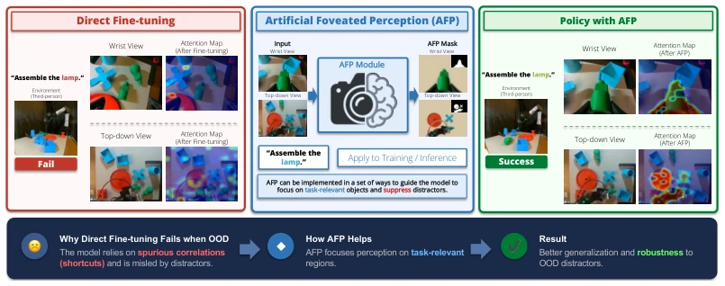
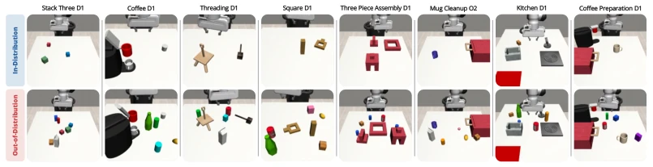
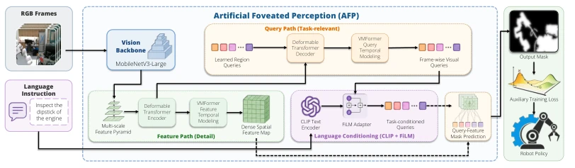
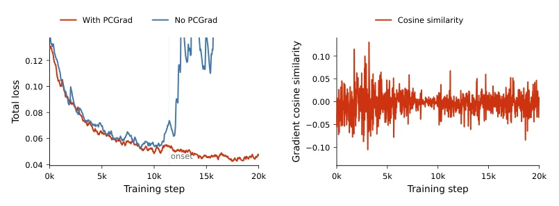
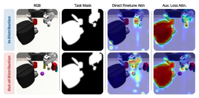
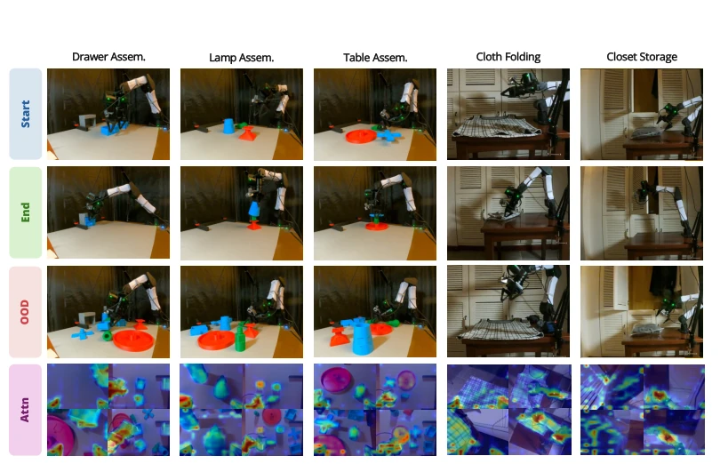
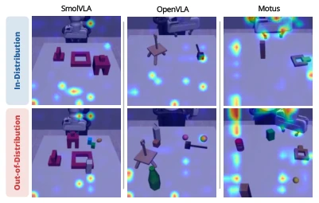
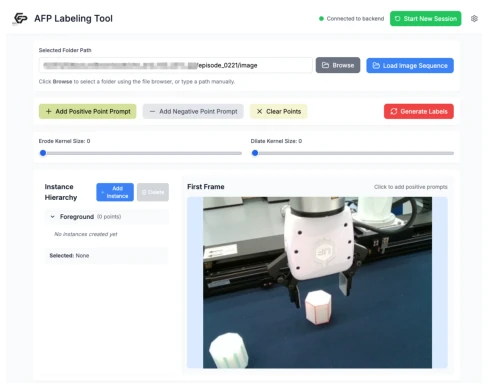
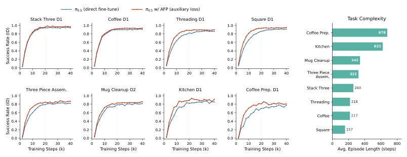

This paper delivers a lesson to robot foundation models that take "shortcuts" during fine-tuning. The authors keenly point out that VLA/WAM models often do not learn "how to do" during fine-tuning, but rather "what the background looks like"; once the scene is fine-tuned (e.g., changing table color or adding irrelevant objects), the model is baffled. The AFP solution is quite clever, employing a lightweight module to generate "attention masks" that forcibly pull the model's gaze back to task-relevant objects during training. The best part is that after training, this module is discarded, occupying no resources during inference, which is very friendly for deployment. However, this approach also has vulnerabilities: AFP itself relies on manually annotated masks for training, which incurs significant cost, and if the task itself is ambiguous, this "human eye" might also fail to see clearly. Overall, it is a practical patch, but do not expect it to solve all generalization problems, especially the annotation dependency aspect which still requires further optimization.
Robot foundation models (such as VLA [1, 2] and WAM [3]), although possessing strong multi-task capabilities, easily fall into "Shortcut Learning" during fine-tuning. Existing research [10, 11] indicates that models tend to exploit spurious correlations in the training distribution (such as background textures, lighting) rather than causal visual evidence. In the robotics domain, this causes policies to fail rapidly under out-of-distribution (OOD) perturbations (such as adding irrelevant objects). Although the computer vision community has existing attention guidance research [12, 13], visual grounding constraints during the fine-tuning stage of robot foundation models remain insufficiently explored. Direct fine-tuning often only optimizes action loss, lacking explicit constraints on "where to look", causing the model to learn "looking at the background" rather than "looking at objects". This paper aims to address this visual grounding failure problem and improve OOD robustness.

Figure 1: Artificial Foveated Perception (AFP) mitigates shortcut learning in robotic foundation models by forcing or guiding their perception towards task-relevant regions while suppressing distractors. Policies from direct fine-tuning often overfit to spurious correlations and fails under out-of-distribution (OOD) perturbations, whereas AFP improves visual grounding and enables more robust policy generalization across environmental variations.

Figure 4: ID and OOD evaluation settings. Top row: in-distribution scenes match the fine-tuning environments for the eight MimicGen tasks. Bottom row: out-of-distribution scenes preserve the same manipulation objective but introduce randomly placed task-irrelevant mesh objects with randomized materials, creating visual distractors that test robustness to shortcut reliance.
AFP is overall a lightweight task-conditioned mask predictor integrated into the VLA/WAM fine-tuning pipeline. The pipeline is divided into two stages: training and inference; during training, AFP serves as an auxiliary supervision signal, and during inference, it is removed. Architecturally, AFP contains a feature path (MobileNetV3 extracts multi-scale features) and a query path (Deformable Transformer decodes language-conditioned region queries). Language is injected into the query state via CLIP encoding + FiLM adapter to achieve task conditioning. The output is a continuous relevance mask with a value range of [0,1]. The core innovation lies in the auxiliary loss design: calculating the EMD loss (L_AFP) between the policy attention distribution and the AFP mask, and using PCGrad [25] for gradient projection to prevent conflicts between grounding objectives and action objectives. After training is complete, the AFP module no longer participates in the control loop, retaining only the fine-tuned policy. Additionally, AFP employs VMFormer's temporal module to enhance inter-frame consistency.

Figure 2: Architecture and Integration with Robotic Foundation Models. AFP predicts task- conditioned masks from RGB observations and language instructions. A feature path extracts dense multi-scale visual features, while a query path learns language-conditioned region queries that identify task-relevant objects, the robot, and other action-critical regions. The resulting mask is used during fine-tuning as an auxiliary grounding signal, aligning the policy’s visual attention with task-relevant regions without modifying the core policy architecture.

Figure 6: Projected gradients stabilize AFP fine-tuning. Left: the y-axis is zoomed in to enable a reasonable comparison between the two curves; the truncated portions of the No PCGrad curve extend beyond the plotted range after the onset point. Without PCGrad-style projection, the total loss spikes after the onset point; with projection, training remains stable. Right: cosine similarity between the action-loss and AFP-loss gradients, showing frequent gradient conflict during training. Projection is triggered 11,152 times over 20k steps.
Experiments cover simulation (MimicGen 8 tasks, 4 models: SmolVLA, OpenVLA, π0.5, Motus) and real-world (FurnitureBench 5 tasks, π0.5). OOD settings introduce irrelevant mesh objects or furniture parts as interference. Metrics include success rate, Soft-IoU, and EMD. Results show that AFP significantly improved OOD success rates (e.g., π0.5 in Stack 3 D1 from 0.61 to 0.88), and ID performance also generally improved. Attention analysis indicates that AFP causes the policy focus to return from the background to the manipulation objects. Ablation experiments confirm that gradient projection is crucial for stability. Real-world experiments further verify the sim-to-real transfer capability, but mask quality remains limited under complex occlusion.

Figure 3: Attention attribution and quantitative grounding alignment. Left: attention attribution on the MimicGen Coffee task under different AFP integration strategies for in-distribution (ID) and out-of-distribution (OOD) rollout frames. Right: Soft-IoU and EMD between policy attention attribution and human-labeled task masks; higher Soft-IoU and lower EMD indicate better grounding. 3 Evaluation

Figure 5: Real-world ID/OOD tasks and attention attribution. We evaluate π0.5 with AFP auxiliary loss on five physical manipulation tasks using an i2RT YAM Arm. Rows show start states, end states, OOD perturbations, and attention attribution. OOD settings introduce task-irrelevant distractors, including unused furniture parts, unseen socks, or an opened cabinet door. Each attention cell shows ID wrist, ID top, OOD wrist, and OOD top views.

Figure 8: Shortcut learning appears across robotic foundation model. Left: qualitative attention attribution for SmolVLA, OpenVLA, and Motus on MimicGen scenarios different from the main- paper Coffee example. Direct fine-tuning often attends to distractors or diffuse background regions in both ID and OOD settings. Right: grounding alignment between policy attention attribution and expert task masks. Across all backbones, AFP auxiliary loss substantially improves Soft-IoU and reduces EMD, indicating more consistent task-relevant visual grounding.
其他图片Other Figures

Figure 7: AFP labeling tool. The interface allows annotators to load a local image sequence, provide positive and negative point prompts on a key frame, manage multiple task-relevant instances, and generate continuous alpha masks for the full trajectory.

Figure 9: AFP improves convergence speed, especially on longer-horizon tasks. Left: ID success rate during fine-tuning for π0.5 with and without AFP auxiliary loss across eight MimicGen tasks. Right: task complexity measured by average episode length. AFP provides the largest convergence gains on longer or more visually complex tasks, where task-relevant evidence is sparse within the full observation stream.